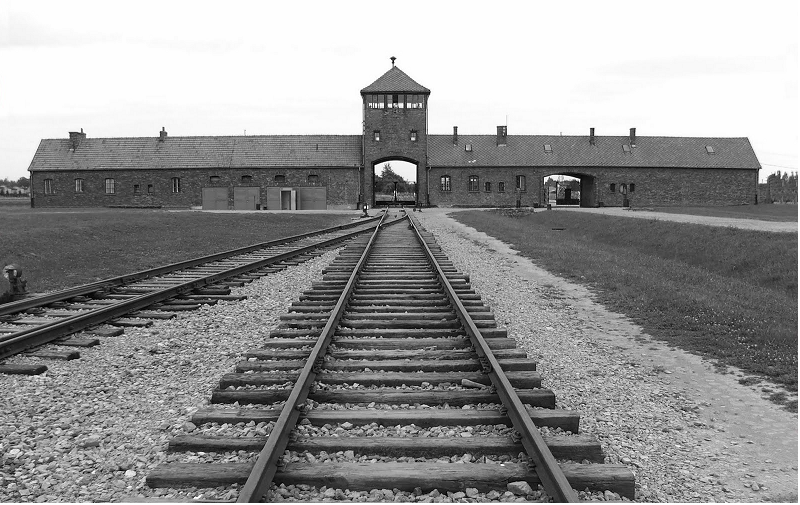

The Second World War, also known as World War Two (WWII) was a war that took place between the years 1939 and 1945 (World War II, 2018). It was a global conflict, hence, the name World War. WWII was the most widespread war in history, involving virtually every part of the world, either directly or indirectly. This war was also the deadliest war in history, causing an estimated 40 to 50 million deaths (Royde-Smith & Hughes, 2017). A large number of Jews were also murdered by Nazi Germany in what we call the Holocaust.
It is most commonly believed that the war started in 1939 in Europe, when Nazi Germany invaded Poland. Although there were many other previous, smaller conflicts that may have helped start the war, this event was what caused most of the world to declare war. This is because the invasion of Poland led France and Britain to declare war on Germany, as both of these nations promised to help Poland in the event of an invasion. The colonies and allies of France and Britain then also went to war with Germany. This was the first major event that led to the start of the Second World War.
There were two main military alliances that were opposing each other during the war: The Allies, and the Axis.
There were three main countries that made up the Allied alliance, known as the “Big Three”:
Below is an image of the leaders of the “Big Three” during WWII. (From left to right, the leaders of the USSR, USA and UK).
In addition to the three main Allied powers, there were other countries that helped in the war effort, or joined later on in the war. Some other important Allied powers include China, France, Canada, Australia, Norway, Greece, and other countries.
There were three main Axis powers during WWII, although some nations allied with the Axis powers changed sides during the middle of the war and fought on the side of the Allies. Axis nations tried to expand their territory and gain natural resources by invading and occupying neighbouring nations. These were the three main Axis powers:
Other nations who fought in the war on the side of the Axis powers include Hungary, Romania, Bulgaria, and some other countries.
Below, there is a map showing the location of Allied and Axis powers during the war. This is to help show how widespread this war actually was.
Map Key:
The Holocaust was the mass murder of Jews and other persecuted groups (like homosexuals) by Nazi Germany during WWII. The leader of Germany at that time, Adolf Hitler, believed in anti-semitism. He thought that Jews were an inferior race compared to naturally born Germans. During the war, Hitler implemented his “final solution”, where he sent millions of Jews and persecuted races to massive death camps. Around six million Jews and other persecuted groups were murdered or killed via forced labour in concentration camps. One of the most famous of these camps was Auschwitz concentration camp in Poland, where an estimated 1.1 million people were murdered in its gas chambers (Rees, 2005, p. 298).
Below is an image of Auschwitz concentration camp in Poland.
